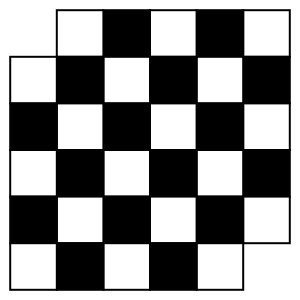

Problema 3.1.1.
Determine se é possível cobrir ou não o tabuleiro abaixo (sem sobreposições) usando apenas dominós?

Solução.
Pinte as casas do tabuleiro acima alternadamente de branco e preto (como no tabuleiro de xadrez). Note que, não importa como colocamos o dominó no tabuleiro, ele sempre cobre uma casa branca e outra preta. Desse modo, se fosse possível cobrir o tabuleiro usando apenas dominós, deveríamos ter o tabuleiro com a quantidade de casas pretas igual à quantidade de casas brancas. Mas no tabuleiro "quebrado" existem 18 casas brancas e 16 pretas. Logo, não é possível fazer tal cobertura.